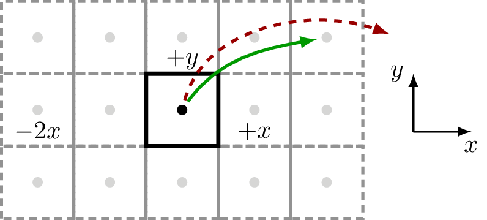

Specifying super-cell information
An important thing when dealing with geometries in how the super-cell is used. First, recall that the number of supercells can be retrieved by:
>>> geometry = Geometry([[0, 0, 0]])
>>> print(geometry)
{na: 1, no: 1, species:
{Atoms(1):
(1) == [H, Z: 1, orbs: 1, mass(au): 1.00794, maxR: -1.00000],
},
nsc: [1, 1, 1], maxR: -1.0
}
>>> geometry.nsc # or geometry.sc.nsc
array([1, 1, 1], dtype=int32)
where nsc is the specific super-cell information. In the default
case only the unit-cell is taken into consideration (nsc: [1, 1, 1]). However when using
the Geometry.close or Geometry.within functions one may retrieve neighbouring atoms
depending on the size of the supercell.
Specifying the number of super-cells may be done when creating the geometry, or after it has been created:
>>> geometry = Geometry([[0, 0, 0]], sc=SuperCell(5, [3, 3, 3]))
>>> geometry.nsc
array([3, 3, 3], dtype=int32)
>>> geometry.set_nsc([3, 1, 5])
>>> geometry.nsc
array([3, 1, 5], dtype=int32)
The final geometry enables intrinsic routines to interact with the 2 closest neighbouring cells
along the first lattice vector (1 + 2 == 3), and the 4 closest neighbouring cells
along the third lattice vector (1 + 2 + 2 == 5). Note that the number of neighbouring supercells
is always an uneven number because if it connects in the positive direction it also connects
in the negative, hence the primary unit-cell plus 2 per neighbouring cell.
Example – square
Here we show a square 2D lattice with one atom in the unit-cell and a supercell which extends 2 cells along the Cartesian \(x\) lattice vector (5 in total) and 1 cell along the Cartesian \(y\) lattice vector (3 in total):
>>> square = Geometry([[0.5,0.5,0]], sc=SuperCell([1,1,10], [5, 3, 1]))
which results in this underlying geometry:
{kind=link}
With this setup, sisl, can handle couplings that are within the defined supercell structure, see green, full arrow. Any other couplings that reach farther than the specified supercell cannot be defined (and will thus always be zero), see the red, dashed arrow.
Note that even though the geometry is purely 2D, sisl requires the last non-used dimension. For 2D cases the non-used direction should always have a supercell of 1.
Example – graphene
A commonly encountered example is the graphene unit-cell. In a tight-binding picture one may suffice with a nearest-neighbour coupling.
Here we create the simple graphene 2D lattice with 2 atoms per unit-cell and
a supercell of [3, 3, 1] to account for nearest neighbour couplings.
>>> graphene = geom.graphene()
which results in this underlying geometry:

The couplings from each unit-cell atom is highlighted by green (first atom) and
blue (second atom) arrows. When dealing with Hamiltonians the supercell is extremely
important to obtain the correct electronic structure. If one wishes to use the 3rd
nearest neighbour couplings one is forced to use a supercell of [5, 5, 1] (please
try and convince yourself of this).